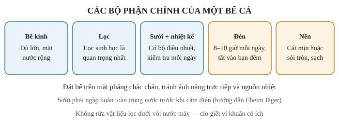

Chọn bể cá đầu tiên: kích thước, lọc, đèn và nền
Tác giả: Nguyễn Trung Đức
Người mới thường mua bể theo cảm giác: bể nào vừa mắt, vừa túi tiền, vừa chỗ đặt trong nhà thì mua. Cách mua đó không sai về mặt thẩm mỹ, nhưng nó bỏ qua câu hỏi quan trọng nhất: bể đó có giữ nước ổn định đủ lâu để cá sống khỏe hay không. Bể quá nhỏ, lọc quá yếu, đèn quá sáng hoặc nền quá sắc đều làm cá stress, và người nuôi sẽ phải sửa bể sau khi cá đã về, lúc đó sửa gì cũng khó hơn.
Bài này giúp bạn chọn bể trước khi chọn cá. Bài không viết lại chu trình nitơ đầy đủ, vì chu trình đó đã được giải thích ở Cách xử lý nước mới trước khi thả cá. Bài này chỉ dùng kết quả của chu trình đó để quyết định kích thước bể và loại lọc.
Kích thước: bể lớn hơn thường dễ nuôi hơn bể nhỏ
RSPCA viết một câu ngắn mà người mới nên nhớ: bể càng lớn càng tốt. Thể tích nước lớn giữ nhiệt độ và chất lượng nước ổn định hơn. Bể nhỏ thay đổi rất nhanh: nhiệt độ tăng nhanh khi trời nóng, amoniac tăng nhanh khi bạn cho ăn hơi nhiều, pH dao động mạnh sau một lần thay nước. Bể lớn cho bạn nhiều thời gian hơn để phát hiện và sửa lỗi.
Mức sàn chung mà RSPCA đưa ra là chỉ mua bể lớn hơn 45×30×30 cm, tức là khoảng 40 lít. Đây là mức tối thiểu cho bể cá nói chung, không phải mức lý tưởng cho mọi loài. RSPCA cũng đưa ra cách tính thể tích: chiều rộng (cm) × chiều sâu (cm) × chiều cao (cm) / 1000. Ví dụ bể 60 cm rộng, 30 cm cao, 30 cm sâu có thể tích 54 lít. Khi mua bể, hãy tính bằng công thức này thay vì tin vào con số ghi trên hộp, vì hộp có thể ghi thể tích cả phần kính và khoảng trống phía trên mặt nước.
RSPCA còn đưa ra hướng dẫn về lượng nước cho mỗi chiều dài cá: với cá nhiệt đới, cho khoảng 1,5–2 lít nước cho mỗi 1 cm chiều dài cá, không tính đuôi. RSPCA ghi rõ đây chỉ là hướng dẫn, vì chất lượng nước còn phụ thuộc vào nhiệt độ, nguồn nước, công suất lọc và cách bạn chăm bể. App-Aquatic cũng khuyên không dùng một quy tắc "một inch mỗi gallon" làm công thức chắc chắn, mà thêm một nhóm loài mỗi lần, chờ 2–3 tuần và kiểm tra nước trước mỗi lần thêm. Bài này dùng hướng dẫn của RSPCA để ước lượng, không dùng nó như công thức chính xác cho mọi bể.
Bảng dưới đây giúp bạn so sánh ba cỡ bể thường gặp ở người mới. Bảng tóm tắt các nguyên tắc trên thành lựa chọn thực tế.
| Cỡ bể | Thể tích khoảng | Hợp với ai | Hạn chế cần biết |
|---|---|---|---|
| Bể nhỏ, khoảng 40 lít | 40 lít | Người chỉ nuôi một con betta, hoặc một nhóm cá rất nhỏ và ít con, đã có kinh nghiệm đo nước | Nước thay đổi nhanh, cần đo thường xuyên, không nuôi đàn cá lớn |
| Bể vừa, khoảng 54–60 lít | 54–60 lít | Người mới nuôi bể cộng đồng đầu tiên: một đàn cá neon 10 con, hoặc một nhóm cá mún 5–6 con + cá chuột 6 con (ví dụ của App-Aquatic cho bể 60 lít) | Vẫn cần lọc tốt và thay nước đều, không thả ba nhóm cá cùng lúc vào bể 60 lít |
| Bể lớn hơn, khoảng 81–100 lít | 81–100 lít | Người muốn bể cộng đồng ổn định lâu dài, hoặc nuôi cá molly (cần bể từ 81 lít trở lên theo Seriously Fish) và cá lớn hơn | Nặng hơn nhiều, cần chân đế chắc chắn, chi phí lọc và sưởi cao hơn |
Về trọng lượng, một lít nước nặng khoảng một kg, chưa tính kính, nền và đồ trang trí. Bể 60 lít khi đầy nước có thể nặng hơn 60 kg. Hãy đặt bể trên mặt phẳng chắc chắn, chịu được trọng lượng đó, tránh đặt trên bàn yếu hoặc kệ không có chân đế vững.
Về hình dáng, RSPCA viết bể rộng tốt hơn bể cao, vì mặt nước rộng giúp oxy hòa tan vào nước tốt hơn. Bể cao, hẹp nhìn đẹp nhưng mặt nước nhỏ, cá bơi theo chiều ngang cũng ít chỗ hơn. Nếu bạn nuôi cá ngựa vằn hay cá neon, bể dài sẽ hợp hơn bể cao.
Về vị trí, RSPCA khuyên không đặt bể gần nguồn nhiệt như ánh nắng trực tiếp và lò sưởi, và đặt bể trên bề mặt chắc chắn. Ánh nắng trực tiếp làm nước nóng lên nhanh và tạo điều kiện cho rêu tảo phát triển mạnh. Khói thuốc lá hay thuốc xịt trong không khí cũng có thể độc với cá, vì vậy đừng đặt bể ở nơi hay xịt thuốc hay hút thuốc.
Lọc: chọn lọc theo vai trò, không chọn theo công suất ghi trên hộp
Lọc có ba vai trò, và người mới cần hiểu cả ba trước khi mua. Lọc cơ học giữ lại cặn bẩn để bạn lấy ra. Lọc sinh học là nơi vi khuẩn sống và xử lý amoniac thành nitrit rồi thành nitrat. Lọc hóa học, ví dụ than hoạt tính, hấp thụ một số chất trong nước trong thời gian ngắn. Trong ba vai trò, lọc sinh học là quan trọng nhất đối với sự sống của cá, vì không có vi khuẩn, amoniac sẽ tích tụ lại.
RSPCA viết không nên nuôi cá trong bể mà không có lọc tốt, đã lắp đặt và bảo trì đúng cách. Câu này có nghĩa là lọc không phải là đồ trang trí, mà là bộ phận giữ cá sống. Khi mua lọc, hãy hỏi lọc đó có đủ chỗ cho vật liệu lọc sinh học hay không, chứ đừng chỉ hỏi lọc đó bơm được bao nhiêu lít một giờ.
Ba loại lọc thường gặp ở bể nhỏ và vừa là lọc thác (treo sau bể), lọc trong (đặt trong bể) và lọc bọt biển (chạy bằng máy sủi khí). Lọc thác gọn, dễ vệ sinh và hợp với bể cộng đồng nhỏ. Lọc trong rẻ và dễ lắp, nhưng chiếm chỗ trong bể. Lọc bọt biển chạy êm, dòng nước nhẹ, hợp với cá con, cá betta và bể sinh sản, vì cá nhỏ không bị hút vào lọc. Lọc thùng ngoài hợp với bể lớn hơn, nhưng người mới chưa cần tới lọc thùng trong lần đầu.
Khi chọn lọc, hãy chú ý tới dòng chảy. Cá neon và cá betta thích dòng nước nhẹ, không thích bị dòng nước mạnh đẩy đi liên tục. Cá ngựa vằn thích dòng nước mạnh hơn một chút, vì chúng bơi khỏe. Nếu lọc của bạn tạo dòng quá mạnh, hãy chỉnh hướng đầu ra về phía thành bể hoặc dùng vật cản để làm dòng nước dịu lại.
Bảo trì lọc cũng quan trọng như mua lọc. RSPCA dặn khi thay nước, hãy rửa nhẹ bọt lọc trong nước bể đã hút ra, đừng bao giờ rửa dưới vòi nước máy, vì clo sẽ giết vi khuẩn có ích. Đừng thay toàn bộ vật liệu lọc cùng một lúc, vì bạn sẽ làm mất phần lớn vi khuẩn trong bể. Hãy thay từng phần, cách nhau vài tuần, để vi khuẩn kịp bám vào vật liệu mới.
Sưởi và nhiệt kế: ổn định quan trọng hơn con số tuyệt đối

Cá nhiệt đới cần sưởi, trừ một số loài cá nước lạnh như cá vàng. RSPCA viết cá nhiệt đới phải có sưởi và đặt ở nhiệt độ đúng cho loài cá đó. Ví dụ RSPCA ghi cá bảy màu chịu được 22–28°C, còn cá chạch cần 18–26°C. Mỗi loài có khoảng nhiệt độ riêng, và bạn cần tra cứu khoảng của loài mình nuôi trước khi đặt sưởi.
Sưởi phải có bộ điều nhiệt. RSPCA viết mọi sưởi đều phải được điều khiển bằng bộ điều nhiệt, và sưởi có thể hỏng, vì vậy hãy dùng nhiệt kế kỹ thuật số riêng và kiểm tra nhiệt độ mỗi ngày. Đừng chỉ tin vào con số trên núm vặn của sưởi. Nhiệt kế dán ngoài thành bể thường kém chính xác hơn nhiệt kế thả trong nước.
Khi lắp sưởi, hãy làm theo nhãn của sưởi bạn mua. Sách hướng dẫn chính thức của Eheim (thermocontrol, dòng kế nhiệm Jäger) ghi rõ: trước khi bật, sưởi phải ngập ít nhất tới vạch MIN. WATER LEVEL, và không bao giờ được bật sưởi ngoài nước. Vì vậy hãy gắn sưởi vào thành bể, chờ sưởi ngập ít nhất tới vạch MIN. WATER LEVEL rồi mới cắm điện. Khi thay nước, hãy tắt sưởi trước khi mực nước xuống thấp hơn sưởi, vì sưởi chạy khi không ngập nước có thể nứt vỡ. Hướng dẫn này là của Eheim, không phải của RSPCA; mỗi hãng có thể ghi khác nhau, vì vậy nhãn của sưởi bạn mua mới là căn cứ cuối cùng.
Về nhiệt độ, bài này không đưa ra một con số duy nhất cho mọi bể, vì mỗi loài khác nhau. Cá neon cần 21–25°C theo Seriously Fish, cá neon chỉ đỏ cần 23–27°C theo Aquatech VN, cá bảy màu chịu được 22–28°C theo RSPCA. Cá neon chỉ đỏ cần nước ấm hơn cá neon một chút (23–27°C so với 21–25°C), vì vậy trong bể đầu tiên đừng nuôi chung hai loài này. Nếu bạn thích vệt đỏ dài của cardinal, hãy chọn cardinal và đặt nhiệt độ theo cardinal, như 10 loại cá cảnh dễ nuôi nhất cho người mới đã viết. Người đã có kinh nghiệm mới nên thử nuôi chung hai loài, và khi đó phải giữ nhiệt độ thật ổn định trong khoảng giao nhau 23–25°C.
Đèn: 8–10 giờ mỗi ngày, tắt vào ban đêm
Đèn trong bể cá chủ yếu phục vụ hai việc: để bạn ngắm cá và để cây thủy sinh quang hợp. Cá không cần đèn sáng cả ngày, và cây cũng không cần đèn sáng 24 giờ. RSPCA khuyên dùng đèn nhân tạo vào ban ngày để cá có chu kỳ sáng tối ổn định như ngoài tự nhiên, với chu kỳ đèn 8–10 giờ mỗi ngày, tắt vào ban đêm. Đừng đặt bể cạnh cửa sổ, vì ánh nắng có thể làm nhiệt độ nước tăng lên nguy hiểm.
Người mới hay bật đèn quá lâu vì muốn ngắm cá nhiều hơn, hoặc bật đèn cả đêm vì sợ cá tối. Đèn bật quá lâu làm rêu tảo phát triển mạnh, nước xanh và cá stress vì không có thời gian nghỉ. Hãy dùng ổ cắm hẹn giờ để đèn tự bật và tự tắt đúng giờ mỗi ngày. Nếu bể của bạn có cây thủy sinh, hãy bắt đầu với 8 giờ đèn mỗi ngày, quan sát một hai tuần, rồi mới tăng dần nếu cây phát triển tốt và không có rêu tảo bùng phát.
Cá neon làm tốt nhất dưới ánh sáng khá mờ, theo Seriously Fish. Nếu bạn nuôi cá neon, hãy dùng cây nổi để che bớt ánh sáng, hoặc chọn đèn có thể giảm độ sáng. Đừng dùng đèn quá mạnh chỉ vì muốn cá lên màu rực hơn, vì ánh sáng mạnh có thể làm cá nhạt màu và hay trốn.
Nền và đồ trang trí: chọn theo loài cá, không chọn theo màu sắc
Nền bể không chỉ để đẹp, mà còn ảnh hưởng tới cá đáy và vi khuẩn. Cá chuột thích nền cát mịn, vì râu của chúng dễ bị tổn thương trên nền sỏi sắc. Seriously Fish viết cá neon làm tốt nhất với nền cát và lũa, rễ cây. Nếu bạn nuôi cá chuột, hãy chọn cát mịn, không chọn sỏi to, sắc.
Đồ trang trí cần có chỗ trốn cho cá. Cá mới về, cá yếu hay cá bị cá khác đuổi cần có chỗ để ẩn nấp. Lũa, đá và cây thủy sinh đều có thể làm chỗ trốn, nhưng cần đảm bảo chúng không có cạnh sắc làm rách vây cá, và không làm thay đổi pH quá mạnh. Lũa mới có thể làm nước vàng nhẹ do chất mùn, điều này thường không gây hại cho cá neon, vì cá neon sống ở nước nhuốm màu nâu trong tự nhiên, nhưng bạn nên ngâm lũa trước khi cho vào bể để bớt chất bẩn.
Đừng cho vào bể đồ trang trí sơn màu sặc sỡ không rõ nguồn gốc, vỏ ốc biển hay đá vôi không kiểm tra, vì chúng có thể làm thay đổi độ cứng và pH của nước. Nếu bạn không chắc một vật liệu có an toàn cho bể cá hay không, hãy hỏi cửa hàng thủy sinh trước khi cho vào bể.
Checklist mua bể lần đầu
Checklist dưới đây dựa trên các nguyên tắc của RSPCA và Seriously Fish. Hãy tick từng mục trước khi mua cá.
- Bể: thể tích ít nhất khoảng 40 lít, mặt bể rộng hơn là cao, đặt trên chân đế chắc chắn, tránh ánh nắng trực tiếp.
- Nắp bể: có nắp để cá không nhảy ra ngoài và để giảm bay hơi, đặc biệt với cá neon và cá betta.
- Lọc: có lọc tốt, đủ chỗ cho vật liệu lọc sinh học, dòng chảy hợp với loài cá bạn định nuôi.
- Sưởi và nhiệt kế: sưởi có bộ điều nhiệt, nhiệt kế riêng để kiểm tra mỗi ngày.
- Đèn và hẹn giờ: đèn 8–10 giờ mỗi ngày, tắt vào ban đêm, có hẹn giờ để không quên tắt.
- Nền: cát mịn nếu nuôi cá chuột, không dùng sỏi sắc.
- Cây, lũa, đá: có chỗ trốn cho cá, không có cạnh sắc, đã rửa sạch và ngâm trước khi cho vào bể.
- Thuốc khử clo: sản phẩm ghi rõ xử lý được cả clo và cloramin, đủ liều cho toàn bộ thể tích bể.
- Bộ test nước: bộ test amoniac và nitrit là thiết yếu, thêm bộ test pH và nitrat nếu có thể.
- Dụng cụ thay nước: ống hút nước, xô riêng chỉ dùng cho bể cá, vợt cá.
- Sổ ghi chép: ghi ngày bắt đầu chạy lọc, kết quả đo nước, ngày thả cá và số lượng cá mỗi đợt.
Sau khi mua đủ đồ, hãy lắp bể, xử lý nước và chạy lọc theo Cách xử lý nước mới trước khi thả cá, rồi mới mua cá theo 10 loại cá cảnh dễ nuôi nhất cho người mới. Mua bể trước, mua cá sau ít nhất hai tuần là cách tiết kiệm tiền nhất, vì bạn sẽ không phải mua lại cá chết.
Kết luận
Bể cá đầu tiên không cần phải là bể đắt nhất hay bể đẹp nhất. Nó cần là bể đủ lớn để nước ổn định, có lọc đủ chỗ cho vi khuẩn, có sưởi và nhiệt kế để giữ nhiệt độ ổn định, có đèn đúng giờ và có nền, cây, lũa hợp với loài cá bạn định nuôi. Khi bể đã sẵn sàng, việc chọn cá sẽ dễ hơn rất nhiều, và đàn cá đầu tiên của bạn sẽ có cơ hội sống khỏe lâu dài.
Nguồn tham khảo
- RSPCA, "Choosing an Aquarium for Pet Fish" — bể lớn hơn 45×30×30 cm (khoảng 40 lít), công thức tính thể tích, 1,5–2 lít nước cho mỗi 1 cm cá nhiệt đới, bể rộng tốt hơn bể cao, không đặt bể gần ánh nắng và nguồn nhiệt, không nuôi cá mà không có lọc tốt, thay nước định kỳ để loãng chất thải (trang RSPCA ghi khoảng 30%/tuần ở mục lọc và lấy ra 10% ở mục thay nước — hai con số khác nhau trên cùng một trang, vì vậy bài không dùng một con số duy nhất làm quy tắc), không rửa vật liệu lọc dưới vòi, đèn 8–10 giờ mỗi ngày, cá bảy màu chịu được 22–28°C (truy cập 23/11/2026): https://science.rspca.org.uk/en/web/rspca/adviceandwelfare/pets/fish/environment
- Seriously Fish, "Paracheirodon innesi (Neon Tetra)" — cá neon cần mặt bể 60×30 cm, nền cát, lũa, ánh sáng mờ, cây nổi, nhiệt độ 21–25°C (truy cập 23/11/2026): https://www.seriouslyfish.com/species/paracheirodon-innesi
- RSPCA, "Keeping Fish as Pets" — khuyên dùng fishless cycling, chỉ thả cá khi bể đã chạy ít nhất hai tuần, chọn cá ở cửa hàng có bể sạch (truy cập 23/11/2026): https://www.rspca.org.uk/adviceandwelfare/pets/fish
- AquaCompat, "New Tank Syndrome: Symptoms, Causes and Emergency Fixes" — thời gian vi khuẩn phát triển 4–6 tuần theo Practical Fishkeeping và khoảng 6 tuần, có thể tới 8 tuần, theo Merck Veterinary Manual (truy cập 23/11/2026): https://aquacompat.com/diseases/new-tank-syndrome/
- Eheim, sách hướng dẫn chính thức sưởi thermocontrol (dòng kế nhiệm Jäger) — trước khi bật, sưởi phải ngập ít nhất tới vạch MIN. WATER LEVEL; không bao giờ bật sưởi ngoài nước; rút điện trước khi bảo trì, để sưởi nguội trong nước ít nhất 30 phút trước khi lấy ra (truy cập 23/11/2026): https://eheim.com/media/05/c6/73/1706018432/3611_3619_thermocontrol.pdf